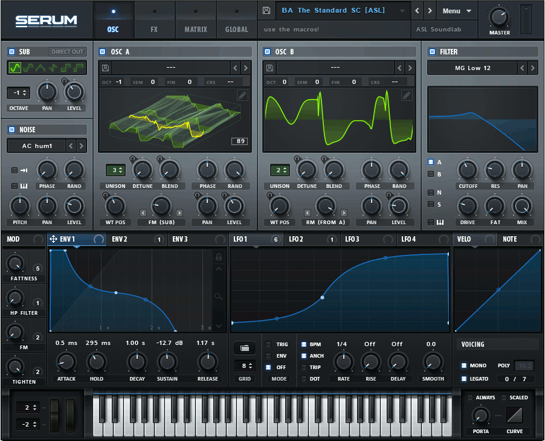

A software synthesizer or softsynth is a computer program that generates digital audio, usually for music. Computer software that can create sounds or music is not new, but advances in processing speed now allow softsynths to accomplish the same tasks that previously required the dedicated hardware of a conventional synthesizer. Softsynths may be readily interfaced with other music software such as music sequencers typically in the context of a digital audio workstation. Softsynths are usually less expensive and can be more portable than dedicated hardware.
